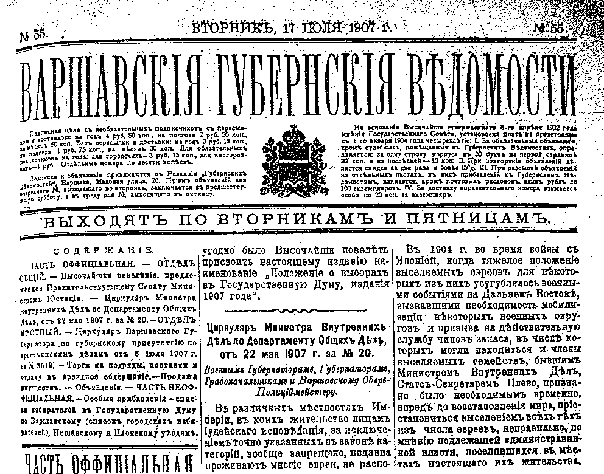
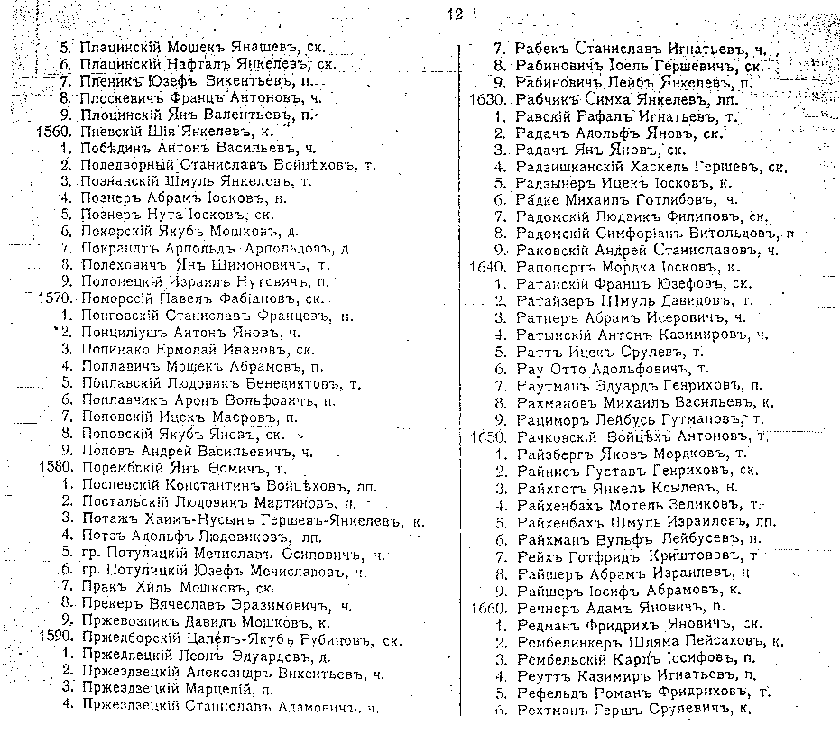

This database contains the names of over 10,000 Jewish men living in Warszawa Gubernia (Warsaw province, of the Russian Kingdom of Poland), who were entitled to participate in the election for the Czarist State Duma (parliament) in 1907.
These voter lists were published in the Russian government newspaper Varshavskiya Gubernski Vedomosti [News of Warsaw Gubernia], 10 July 1907. Written in Cyrillic, they were translated by Mrs. Galina Shuster and edited by Ada Holtzman, Project Coordinator.
This project was sponsored by the Research Division of JewishGen and made possible by donations to JewishGen-erosity.
The voter lists contained 24,828 names. Only the Jewish names were extracted for this database: 10,142, almost 41% of the total names in the lists. There are 20 towns covered:
| Town | Coordinates | Distance/Direction from Warsaw |
Total Records |
Jewish Records |
% Jews |
|---|---|---|---|---|---|
| Błonie | 52°12' / 20°37' | 16.6 miles WSW | 731 | 226 | 30.9% |
| Gąbin (Gombin) | 52°24' / 19°44' | 54.4 miles WNW | 722 | 343 | 47.5% |
| Gostynin | 52°26' / 19°29' | 65.2 miles WNW | 1,040 | 400 | 38.5% |
| Grójec | 53°03' / 20°49' | 55.8 miles N | 860 | 499 | 58.0% |
| Kaluszyn | 52°13' / 21°49' | 34.6 miles E | 1,433 | 998 | 69.6% |
| Kutno | 52°14' / 19°22' | 69.1 miles W | 1,802 | 914 | 50.7% |
| Łowicz | 52°07' / 19°56' | 46.1 miles W | 1,697 | 619 | 36.5% |
| Mińsk Mazowiecki | 52°11' / 21°34' | 24.4 miles E | 2,398 | 269 | 11.2% |
| Mszczonów | 51°59' / 20°31' | 27.5 miles SW | 1,096 | 461 | 42.1% |
| Nasielsk | 52°35' / 20°48' | 24.5 miles NNW | 428 | 208 | 48.6% |
| Nieszawa | 52°50' / 18°54' | 96.9 miles WNW | 394 | 140 | 35.5% |
| Płońsk | 52°38' / 20°23' | 37.1 miles NW | 1,348 | 731 | 54.2% |
| Pułtusk | 52°43' / 21°06' | 32.5 miles N | 1,511 | 616 | 40.8% |
| Radzymin | 52°34' / 20°22' | 34.5 miles NW | 647 | 362 | 56.0% |
| Skierniewice | 51°58' / 20°09' | 41.0 miles WSW | 1,431 | 423 | 29.6% |
| Sochaczew | 52°14' / 20°15' | 31.7 miles W | 587 | 353 | 60.1% |
| Warka | 51°47' / 21°12' | 33.3 miles SSE | 733 | 394 | 53.8% |
| Warszawa | 52°15' / 21°00' | - | 2,467 | 1,241 | 50.3% |
| Włocławek | 52°39' / 19°02' | 87.2 miles WNW | 2,997 | 673 | 22.5% |
| Zakroczym | 52°26' / 20°38' | 20.0 miles NW | 506 | 272 | 53.8% |
| Total | 24,828 | 10,142 | 40.8% | ||

The Gubernskie Vedomosti were Czarist-era government newspapers, published in each gubernia between 1838 and 1917. These newspapers included official government notices, including these voters lists for the elections for the Russian parliament (Duma) were held (or supposed to be held) in 1906, 1907, and 1912. These are the years in which voter lists were published. The lists which have been translated for this JewishGen database are part of the Duma voters lists for year 1907.
The lists include thousands of names, Jews and other non-Russians among them, of men who met certain criteria and were thus eligible to vote for the Czarist Duma. Among the eligibility requirements was that the voter must be over 25 years old. The principle eligibility criteria is listed in the "Voter Status" field of the database, such as taxpayers, property and business owners. The names listed also include patronymics -- their fathers' given names.
The greatest value of these lists is mainly in the small towns in Poland for which no civil records (births, marriages and deaths) are available. For areas where we have access to good vital records, they add only a little value. But for towns/regions where there are no existing vital records, these lists can be very valuable sources for genealogical research.
These lists were one of the main sources used by Alexander Beider's to compile his book A Dictionary of Jewish Surnames from the Kingdom of Poland (Avotaynu, 1996). See Michael Steinore's article "An Analysis and Guide to Beider's Sources in the United States", in Avotaynu XIV:3 (Fall 1998), pages 33-39, especially page 35.
The database contains all the information that is on the original list itself. There is no additional information available in the original source. For an illustration of one of the original lists, click on the image below.
The database contains the following fields:

On a personal note: Both my parents were born in the small town of Gombin (Gąbin), near Płock, Poland. Through these lists, I learned who were my great great grandfathers, both maternal and paternal! It brought me such joy and a breakthrough in my own genealogical research, so I decided to start a project of translation all the voter lists and publish them as a JewishGen database.
I thank Joyce Field for her persistence and assistance. Without her help in the fundraising, nothing of this would have happened. I also thank Warren Blatt and Michael Tobias for their dedication and hard work on these lists.
Finally, many thanks to all the donors to JewishGen-erosity who made my dream come true -- the lists are now translated into English, and posted among the other magnificent databases of JewishGen.
Ada Holtzman,
Israel
February, 2002.
The Warszawa Gubernia Duma Voters List is searchable via the All Poland Database.